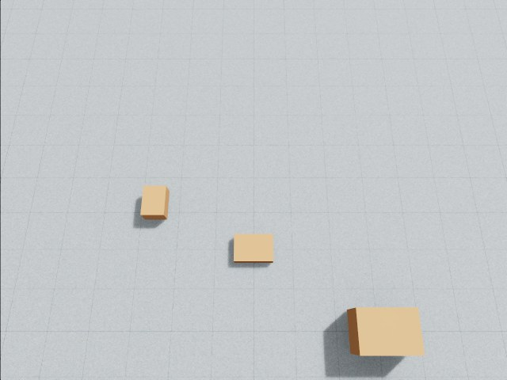
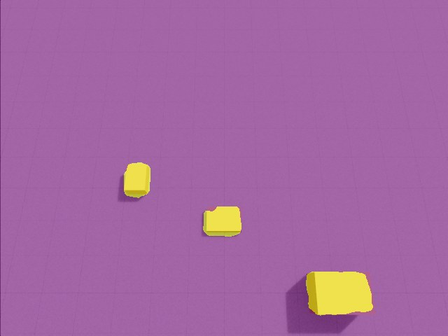

About
I live in Los Angeles. I’m a data scientist at the Keck School of Medicine of USC, where I work on NIH-funded studies of the brain, genes and the immune system. I also build AI products: I was the founding engineer of Apateu, a student-housing marketplace and AI search engine, and I built Moonlight, an iPhone app for parents of children with autism. With a high-school student I mentor, I’m building an autonomous delivery drone that picks its own landing spot. I grew up in China and studied statistics at Southeast University (东南大学) in Nanjing, then mathematics at Utrecht University and analytics at USC.
Most of my work is checking whether a result, a model or a machine is right enough to act on, and building the pipeline that makes it so.

Things I’m interested in
Statistics and data science
I was a statistician before I was an engineer, and it is still how I think about everything below: what would it take to convince me this result is real?
 Medical research at USCData scientist · Keck School of Medicine of USC, Division of Biostatistics · 2023 to presentThe computational analyst on five NIH-funded studies: air pollution and brain aging, childhood adversity and DNA methylation, immune signatures after trauma, a deep-learning model of adolescent brain structure, and hearing loss in children on chemotherapy.
MoreLess
Medical research at USCData scientist · Keck School of Medicine of USC, Division of Biostatistics · 2023 to presentThe computational analyst on five NIH-funded studies: air pollution and brain aging, childhood adversity and DNA methylation, immune signatures after trauma, a deep-learning model of adolescent brain structure, and hearing loss in children on chemotherapy.
MoreLess
The questions are big and human. Does traffic pollution age the brain? What does childhood adversity write into DNA? Can a scan predict a hormone? The data is enormous and noisy, so most of my job is building the pipeline that makes an answer trustworthy before anyone reads it.
My main project follows air pollution into the brain. Working with about 1,600 MRI scans from older women in the Women’s Health Initiative Memory Study, I created and maintain MRIreduce, an open-source R package on CRAN that turns raw brain images into structured features without a predefined atlas, building on my advisor’s Partition method. I then used high-dimensional causal mediation to ask which brain regions carry pollution’s effect on memory. I’m first author on the manuscript, now under revision.
- Harmonized eleven cohorts of blood samples from trauma and sepsis patients across three measurement platforms and found a 36-gene neutrophil signature that reproduced with 97.2% directional agreement (AAST 2026 abstract).
- Built a deep-learning pipeline with explainability built in that predicts adolescent hormone levels from brain structure in about 9,100 ABCD Study participants (OHBM 2026 abstract).
- Ran an epigenome-wide study of childhood maltreatment and DNA methylation: 453 young people, four timepoints, about 768,000 sites, kinship-adjusted mixed models on USC’s HPC cluster.
- Built and deployed PedsHEAR, a clinician-facing tool that estimates hearing-loss risk for children on cisplatin chemotherapy, around my advisor’s validated model.

AI engineering: building apps people use
I build apps on language models. In practice most of the work is deciding what the model is allowed to say and what the code has to verify.
 ApateuFounding engineer · with Danbi Jang · 2025 to September 2026A student-housing app. Students sublease to each other with a lease signed in the app, and an AI agent answers “a 2-bed near USC under $1,400 for the summer” with specific buildings and their current listed prices.
MoreLess
ApateuFounding engineer · with Danbi Jang · 2025 to September 2026A student-housing app. Students sublease to each other with a lease signed in the app, and an AI agent answers “a 2-bed near USC under $1,400 for the summer” with specific buildings and their current listed prices.
MoreLess


It started with a problem Danbi and I both had: we tried to sublease our own apartments and it was miserable. A group chat, no listing, no contract, no way to know if the stranger on the other end was real. So we built the app we wanted and launched it on the App Store in September 2025.
Under the search engine is an index I built: 353 operator-specific adapters that read prices straight from property managers’ own websites across 3,700+ buildings in five metros, converted to a price per bed, because that is how students rent. The agent is a tool-use loop on Claude’s API with 34 tools, and a grounding layer keeps an amenity only when the building’s own page states it. I owned the whole stack, SwiftUI, Node and MongoDB, and wrote most of the adapters by directing AI coding agents the way a lead runs a small team.
- 1,000+ registered students, doubled in six months.
- Ten campus Instagram accounts run by AI agents we built, about 6,000 followers, nothing spent on ads.
- A two-person team with no employees. Numbers as of August 2026.
 MoonlightAI engineer / full-stack software engineer · San Diego · 2026An iPhone app for parents of children with autism. A parent records an observation with a photo or a voice note, and the app turns weeks of records into charts a doctor can read: sleep, bowel health, therapy sessions and food, and which things tend to occur together.
MoreLess
MoonlightAI engineer / full-stack software engineer · San Diego · 2026An iPhone app for parents of children with autism. A parent records an observation with a photo or a voice note, and the app turns weeks of records into charts a doctor can read: sleep, bowel health, therapy sessions and food, and which things tend to occur together.
MoreLess
{kind=link}
{kind=link}
{kind=link}
Parents of a child who may not have the words to say how they feel keep track of a great deal, and are then asked to recall weeks of it at a short appointment. Moonlight is one place to record structured daily observations across built-in and custom categories, and it looks for patterns across them over weeks.
The rule I held to was that the language model may suggest a pattern, and must report the times it did not hold, but every number in a report comes from a database counter, never from the model. The app gives no medical advice: if the model drafts a line that reads like a treatment change, code replaces it with a fixed instruction to keep recording and consult a doctor. Names are redacted before every prompt, and the whole app works in Chinese and English.
Since launch the app has changed in weekly rounds driven by the family. The latest reworked Insights: any date range now reads as sections a clinician would recognize, with sleep, bowel health on the Bristol scale, intervention sessions and nutrition, every chart computed from the records, and the whole report exports to a PDF for the next appointment.
I built it end to end: requirements gathered from parents with no technical background, a proposal they approved, weekly check-ins, one storage design reversed when their security checklist made a server necessary, and version one in production in August 2026 after a four-week build. SwiftUI, Swift Charts, Node, MongoDB, OpenAI and AWS.
Electrical engineering: putting AI on hardware
Everything above runs on a server or a phone. I want to learn what it takes for AI to work when it has motors, sensors and a battery, and a mistake has physical consequences.
 An autonomous delivery droneMentor and autonomy engineer · with a high-school student in San Diego · summer 2026 to presentA drone that carries a one-kilogram package to a delivery area, inspects the ground with an AI camera and two 3D lidars, and chooses where to land, or declines when the evidence is not good enough. No landing marker needed. Built with a high-school student I mentor; so far it flies only in simulation.
MoreLess
An autonomous delivery droneMentor and autonomy engineer · with a high-school student in San Diego · summer 2026 to presentA drone that carries a one-kilogram package to a delivery area, inspects the ground with an AI camera and two 3D lidars, and chooses where to land, or declines when the evidence is not good enough. No landing marker needed. Built with a high-school student I mentor; so far it flies only in simulation.
MoreLess
Live 3D model · drag to orbit, ⌘/Ctrl + scroll to zoom · drag sideways to orbit
- Camera footprint, labelled road
- Obstacle
- Lidar returns
- Downward beam
- Lidar blind spot
- Candidate landing area
The mission
The first version flew to a printed landing marker. In September we dropped the marker. Now the drone flies to an allowed delivery area, inspects the ground and picks a spot that is firm, level, clear of people and big enough for the aircraft, then keeps checking it all the way down. If it cannot establish one, it declines and flies back. Clear-looking ground is not proof of a safe landing, so missing or stale evidence counts as unknown, never as clear.
The design splits the brain in two. ArduPilot on the Pixhawk stays the pilot: stabilization, GPS, failsafes, geofence and the human’s override switch. The Raspberry Pi decides where to look and where to go, and sends navigation commands through the autopilot; it never drives the motors directly.
Choosing the camera and the model
The camera is the Raspberry Pi AI Camera, whose Sony IMX500 sensor runs a small neural network on the chip itself. The student already has a person detector running on it, and we kept it. To understand the ground we tested pretrained segmentation models instead of training our own. A street-scene model was the first baseline; we chose SafeLand, a SegFormer model trained on aerial images that labels 23 classes, including road, grass, water, obstacles and people.
SafeLand has 47 million parameters, which needs about 47 MB even at 8-bit precision, and the IMX500 has roughly 8 MB for its model. So SafeLand runs on the Pi’s CPU instead: loaded and warmed before takeoff, idle during cruise, and running only while the drone searches, approaches and descends.


- Road
- Obstacle
- Person
- Water
How it will learn
Training is simulation-first. In NVIDIA Isaac Lab, every rendered camera frame passes through the same frozen SafeLand model the Pi will run, with a modelled delay standing in for the Pi’s, so the navigator learns from late, imperfect predictions rather than the simulator’s perfect labels. At each step it reads 2,906 numbers: SafeLand’s class probabilities on an 8 × 8 grid over the image, lidar ranges with flags for where nothing came back, a short memory of measured ground heights, and the aircraft’s own state and battery.
A scripted controller comes first, so the landing rules can be checked by hand. Only after the simulator passes those checks does PPO, a reinforcement-learning method, learn the approach, with the vision weights held fixed. On September 22 the inspection loop (rendered camera, SafeLand, lidar and a scripted controller) ran on six test scenes, with one and then four simulated cameras at once. No learning has started yet, on purpose.
Before any of this, our first flight code carried a 2.7 km route over a virtual Mission Bay on three simulated airframes, and a fault lab killed a motor, jammed the GPS and faked a dying battery to see what the autopilot would do. The student now decides what the delivery demo needs and which layer of the system should own it, which is the part I find most meaningful.
- Holybro X650 V2 airframe with 15-inch propellers; a one-kilogram package released by a servo latch, only after a verified landing.
- Two Livox Mid-360S lidars, one upside down under the nose and one upright on the mast, together cover 52° above and below the horizon all the way around. Directly beneath the drone is a blind spot, so the plan is to map the ground ahead during the approach and keep tracking it on the way down; the single downward beam only checks height.
- The Pi and the AI Camera already run on the bench; the airframe and lidars are not built yet.
Education
- 2023M.S. in Analytics, University of Southern California, Los Angeles
- 2021M.S. in Mathematics, Utrecht University, the Netherlands
- 2020B.S. in Statistics, Southeast University (东南大学), Nanjing
Selected writing and software
- 2026Traffic-related air pollution, brain structure and cognitive aging in older women (WHIMS-AIR).
- 2026MRIreduce: ROI-based transformation of neuroimages into high-dimensional data frames.
- 2026Hormone-sensitive gray matter during early adolescence: deep learning and biasing confounds.
- 2026Same storm, different dataset: reproducibility of leukocyte transcriptomic changes after blunt trauma.
- 2025HDCIT: a high-dimensional causal inference test for single exposure, multiple mediators and single outcome.